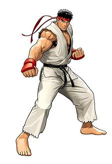
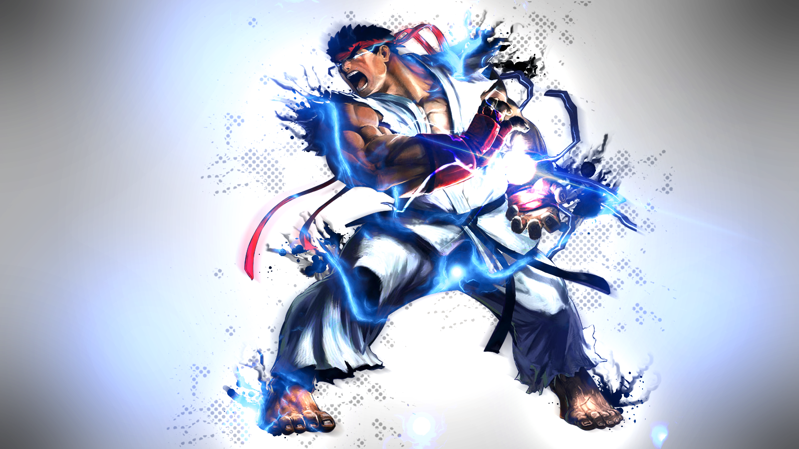
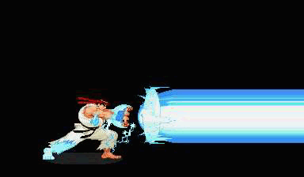
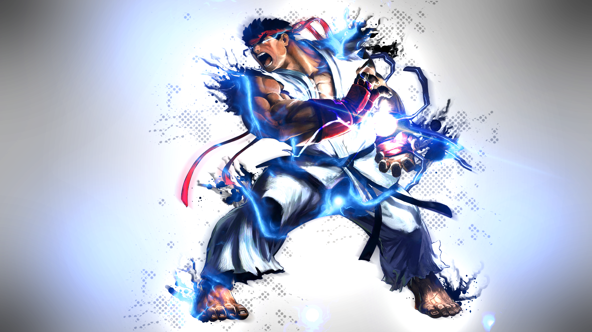
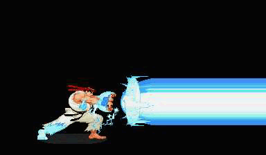

Royal
Aggression
BIOGRAPHY
RYU
As a young boy,
Ryu was an orphan and had no memories of his parents. He is adopted and raised
by Gouken in a secluded dojo, and is intensely trained in Gouken's style of martial arts. A few years later, Gouken
started training his best friend's son, Ken
Masters, at the dojo. Ryu and Ken quickly became good friends and trained
together daily. Still to this day, Ryu looks to Gouken as a father, and
considers Ken to be his best friend and surrogate brother. When Ryu turned 23, Gouken
believes that Ryu's training is complete, and Ryu leaves the dojo.
Ryu wants to test and hone his martial skills, and set out to challenge the
best fighters around the world.
Ryu finds himself at the first World Warrior tournament. After defeating all
opponents, Ryu earns the right to face the host of the tournament, Sagat.
Sagat nearly defeats Ryu and let his guard down after he thought he had won. Ryu
had an intense desire to win and allows himself to become overcome by the
Satsui no Hadou, also known as the Dark Hadou. (When Ryu
loses control of his inner Dark Hadou, he transforms into Evil
Ryu). Ryu then
launches a perfectly timed Metsu Shoryuken which scars Sagat's chest
and nearly kills him. After Sagat regains consciousness, he swears vengeance
on Ryu.
During the events of SFA2, Ryu
is told by Ken that Gouken was killed by Akuma,
and he immediately sets out to the man called Akuma. He eventually encounters Akuma
on a secluded island called as Gokuentou, and a battle commences. Akuma senses
that Ryu had the same powers as he does, and tells Ryu about the Satsui no
Hadou - a power that consumes the practitioners of their shared fighting
style, driving them to win even if it means killing the opponent. Akuma then
uses his fist to destroy the island, leaving Ryu stranded. After escaping the
island, Ryu runs into Ken and they decide to have a fight like old times. Ryu
losses the fight, and Ken realizes that Ryu was not himself. Ryu tells Ken that
he is deeply
troubled since his last victory over Sagat. To cheer him up, Ken gives Ryu his
red headband as a reminder to stay focused, which Ryu was sincerely grateful
for.
Later during SFA2, Ryu runs into a girl named Sakura,
who claims to be his #1 fan. She expresses her deep desire to become his student, but Ryu
tells her that he has much to learn himself, and can't train her
at this time. Soon thereafter, Ryu is found by Sagat who demanded a rematch. Ryu
notices that Sagat wasn't fully recovered from their last bout and protests
fighting, but
Sagat persists. They begin fighting but Ryu holds back, which allows Sagat to
win the fight. Afterwards, Sagat realizes
Ryu didn't use his full strength, and vowed to fight him again someday.
Two years later (during SFA3), Ryu continues to be troubled by what Akuma
had told him. He meets a woman namedRose, who tells him
that he cannot defeat M. Bison unless he
fights him at the cost of his soul. When Ryu confronts Bison, he is defeated
despite putting up a valiant fight. Bison takes the semi-conscious Ryu and
begins brainwashing him. Bison attempts to use Ryu's Satsui no Hadou to
strengthen his own Psycho Power, but is eventually interrupted by Ken, Sakura, and Sagat,
each of them having followed Ryu for their own reasons. While Ken and Sakura
distract Bison, Sagat challenges the brainwashed Ryu and quickly notices that Ryu
isn't himself at all. Sagat urges Ryu to come to his senses to confront Bison.
Somehow, Ryu is able to overcome Bison's brainwashing, and destroys Bison temporarily.
Sometime after the second World Warrior tournament, Ryu enters the Street
Fighter 4 tournament to further hone his skills and reunite with Ken for
another rematch. During his journey, he runs into Sakura and encourages her to
train harder. He also encounters Sagat and the two finally have their promised rematch
(the outcome of this battle is unknown). In the finals, Ryu battles Seth
and defeats him inside the S.I.N. headquarters. During and after
their battle, the building is falling around them. Ryu unleashes the Satsui no
Hadou on the BLECE machine, a weapon of mass destruction developed by S.I.N.
that harnessed the energy in the human body. During this time, Sakura was searching for Ryu and
finds him attacking the machine. Just then, a pulse of energy from the
BLECE machine knocks her into a wall. Ryu defends Sakura and unleashes a
Shoryuken on the machine, destroying it. Afterwards, the two leave the S.I.N. headquarters
together.
Later, Ryu encounters Gouken and learns that Gouken survived the battle with Akuma. Gouken uses the Power of Nothingness to seal Ryu's Satsui no Hadou, which knocks him unconscious. Akuma shows up shortly after and challenges his brother to a duel, the winner of which will claim Ryu (the outcome of this battle is unknown).
Many years later,
Ryu enters the third World Warrior tournament. His most notable fight during
the tournament is against Hugo, who is able to withstand his Shin Shoryuken and continue fighting. After the battle, he
serves as Hugo's
pro-wrestling tag-team partner for a brief period of time before moving on. Ryu
also encounters Alex, and
defeats him swiftly. Ryu encourages the young wrestler to continue honing his
abilities against strong opponents. Alex is fascinated by Ryu's skill and became
determined to become stronger. Ryu
continues his travels and eventually meets the hermit, Oro.
After a battle between the two, Oro aids Ryu in his training, though Ryu is
never truly aware of the hermit's presence.

 

Street
Fighter 4


Street
Fighter 4